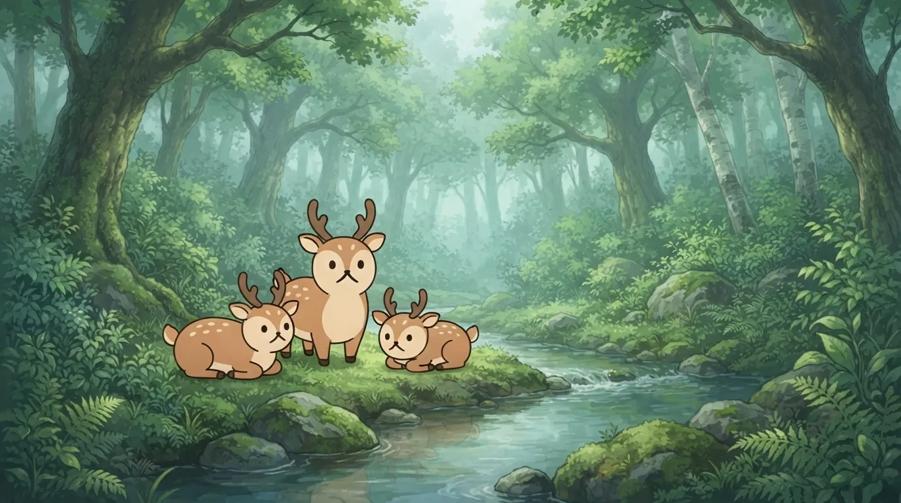
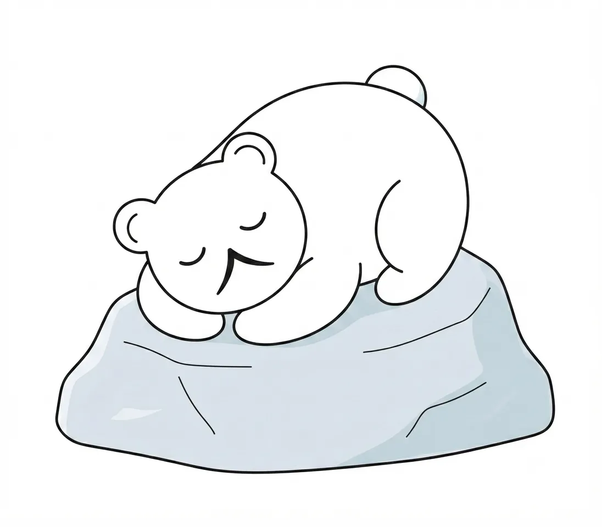
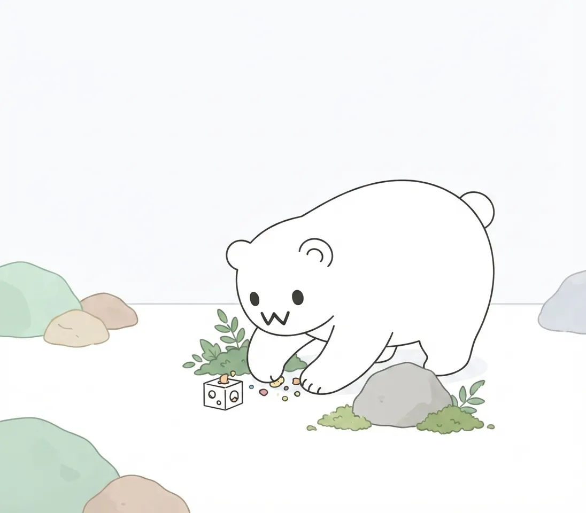
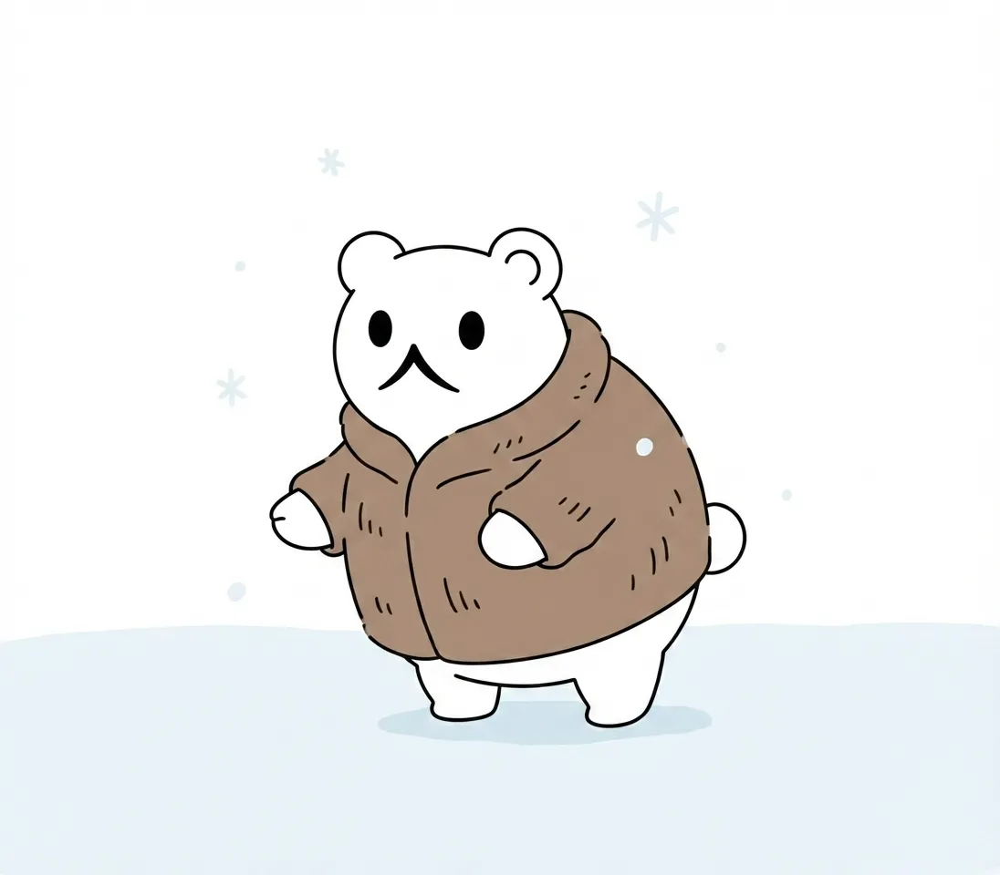

動物たちの暮らし
何を食べ、どう眠り、どんなふうに一日を過ごしているのか。近くで見るほど、遠い世界のことではなくなります。
一日の過ごし方
私たちは、動物たちに「決まったショーの時間」をあまり強要しません。朝起きてから夜に眠りにつくまで、彼らがどんな風に風を感じ、どこでぼーっと過ごし、どのタイミングで水に飛び込むのか。その選択の多くは、動物たち自身の気分や日々のリズムに委ねられています。
きれいに整えられた檻の中で指示通りに動く姿を見せるのではなく、気まぐれに歩き回ったり、冷たい岩の上で丸くなって眠ったり。予定調和ではない、彼らのリアルな「日常の時間」がここには流れています。訪れるタイミングによってまったく違う表情に出会えるのも、当園ならではの楽しみ方です。

食事のこと
「ごはんの時間です」と一斉にエサを放り込んでおしまい、というスタイルは採っていません。北の動物たちが野生で手に入れている食の環境を再現するため、隠されたエサを探させたり、あえて時間をかけて頭を使わせる工夫を凝らしています。
ホッキョクグマが氷のプールで魚を追うときの真剣なまなざしや、エゾシカが硬い木の皮を器用に噛み砕く音。それは単なる「給餌」ではなく、彼らが本来持っている野生のスイッチをそっと押すための大切な時間です。食べる瞬間のダイナミックな表情から、北国の生命の力強さを感じ取っていただけます。

季節と暮らし
北海道の気候は、動物たちの毛並みや行動を劇的に変化させます。雪深い冬が訪れれば、寒さに強い動物たちは文字通り水を得た魚のように活発になり、分厚い冬毛に包まれた丸っこいシルエットで雪原を駆け巡ります。
季節の移り変わりとともに、動物たちの暮らしもまたダイナミックに姿を変えます。人工的な空調で年中同じコンディションを保つのではなく、北の厳しい寒さや澄んだ空気をそのまま受け入れながら生きる姿にこそ、この動物園が一番見せたい「本当の生態」があります。
